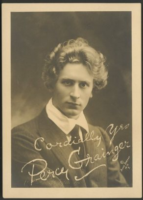

Tuesday, April the 19th, 2011
back to: title, date or indexes

Now you too can speak and write like Percy Grainger! At Strange Flowers, which I am extremely pleased to have discovered, James Conway provides a splendid list of Grainger-approved words. He explains:
… the older he got the more cantankerous he became. A 1958 piece entitled “The Things I Dislike” began “Almost everything. First of all foreigners, which means: all Europeans except the British, the Scandinavians & the Dutch.”
Grainger was nothing if not thorough, and his distrust of anything originating south of Holland led to him to try and purge his writing of Greco-Latin elements
There is much more in the piece about the madcap Antipodean composer, but the highlight is the glossary itself. Go thou hence and memorise it, and soon you will be able to write vast epic poems akin to those of Charles Montague Doughty, surely Grainger's guiding spirit?